Get your engine running.
One guide, in build order. Large wiring diagrams, brief explanations, and checks before each next step.
Tap any wiring diagram to view it at full resolution.
Important: How to read the wiring illustrations
Most diagrams are AI-generated visual examples, not device connector pinout drawings. The exception is the Bosch LSU 4.9 wideband wiring reference: its numbered six-terminal Bosch connector and designated ECU wideband connections are intended to be followed exactly for that sensor and the specified Big Brick wideband channel. The other illustrations explain the electrical connections needed between compatible hardware and the Big Brick. Except for the specific Bosch LSU 4.9 reference, ECU-side functions and indicated cavity numbers are example assignments for the Big Brick; the wire positions at sensors, relays, coils, and other pictured hardware are simulated connection points, not verified device terminal numbers, plug orientations, or physical harness instructions.
Verify the actual device before connecting it. Identify its exact make/part number, manufacturer's pinout, power requirements, signal range, polarity, connector orientation, and applicable fuse/current ratings. Match each real device terminal to the corresponding function shown here, then verify the chosen ECU channel against your final Big Brick pinout and schematic revision. Do not wire a device by the apparent position of a terminal in an illustration.
Allocate your complete harness first. The same ECU pin may appear in several separate diagrams because each diagram is an independent example. That does not mean one ECU signal pin can be assigned to several unrelated devices. List every required input/output, choose a distinct available channel of the correct type for each signal, and set those assignments in the ECU software before building the harness. Compatible 5 V supplies and sensor-ground returns may be shared only within their electrical limits.
Examples do not limit the ECU. The four-injector picture is only a four-cylinder example: the Big Brick has 16 equally capable general-purpose low-side outputs, and its software can control up to 12 injectors when those channels are configured for injection. Other free low-side outputs can serve other compatible loads. Likewise, compatible analog-voltage inputs are interchangeable for MAP, fuel pressure, oil pressure and similar sensors: choose free inputs and configure each sensor's own scaling/calibration from its exact specifications.
Original connector photographs are separate references. The real Big Brick connector image is not AI-generated, but pin placement and connector-face orientation must still be checked against the final design.
Start with the key switch and main relay.
The main relay supplies switched high-current power to the ECU and engine loads. The separate low-current wake feed keeps the ECU alive long enough to finish saving tune changes after the engine stops.
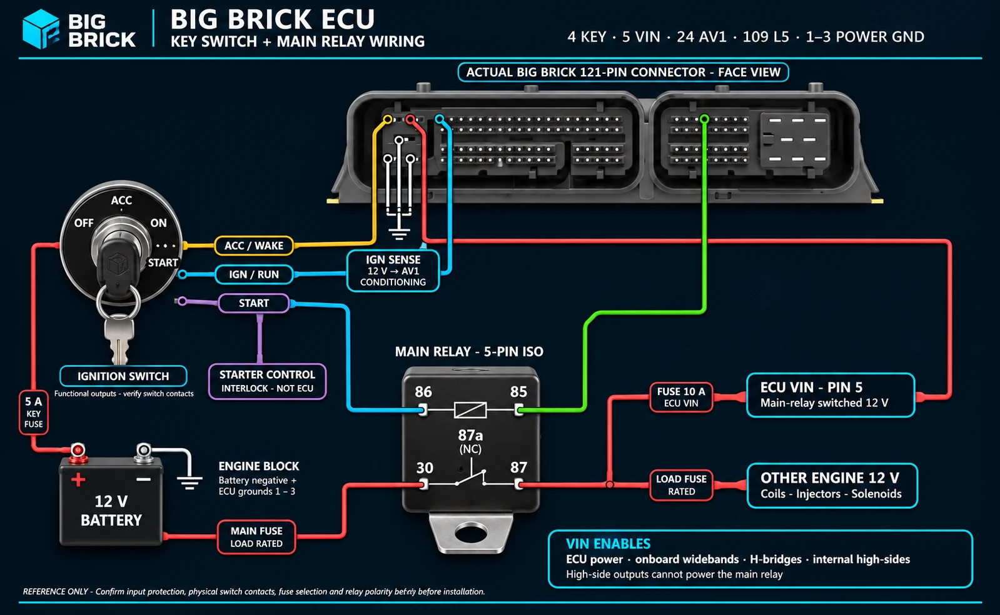
Wakes the ECU with its low-current input; main engine loads remain off.
Enables the relay coil and supplies the run-state input. The main relay feeds fused VIN and engine loads.
Momentary starter request to a properly interlocked starter relay or an ECU-managed start system.
Before moving on: Confirm wake and run states independently, correct relay operation, and stable fused ECU power with a protected, non-running test setup.
Connect the throttle body and pedal.
The throttle has a motor pair and two independent position signals. The accelerator pedal similarly uses position-sensor channels, but its actual terminal arrangement depends on the pedal assembly.

Pedal: APP1 uses AV7 / pin 18 and APP2 uses AV8 / pin 17 in this example, with sensor 5 V from pin 50 and ground from pin 32. Follow the pedal manufacturer’s actual connector pinout and sensor calibration; the pedal does not connect to the throttle motor outputs.
Early checkpoint: With the engine off, starter disabled and fuel/ignition disconnected, verify both pedal position tracks and both throttle position tracks in tuning software. Carry out any throttle-motor actuation or calibration only with suitable safety precautions and the manufacturer's procedure; the blade may move unexpectedly.
Alternative: cable throttle with 4-wire idle stepper
A GM-style four-wire idle air control (IAC) stepper has two separate motor coils, without a position-feedback sensor. The Big Brick controls each coil with one H-bridge, so this setup uses both H-bridges. A drive-by-wire throttle cannot be operated at the same time; DBW already performs idle-air control.
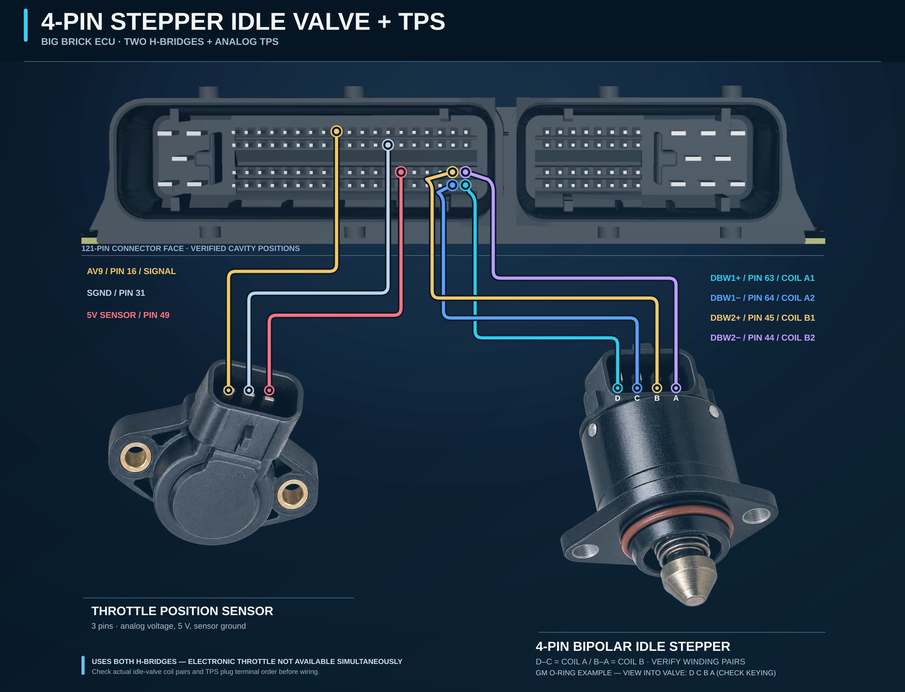
Verify the valve before wiring: GM-style stepper connector arrangements are not universal. Identify the actual terminal letters and measure the two coil pairs with an ohmmeter: each H-bridge must connect across one complete winding, not across two unrelated wires. Confirm TPS signal, 5 V and sensor ground against the exact TPS connector pinout.
Connect crank and cam sensors.
Choose the example matching the actual sensor technology. Configure the correct engine trigger pattern and input settings before attempting a start.
Hall / digital sensor
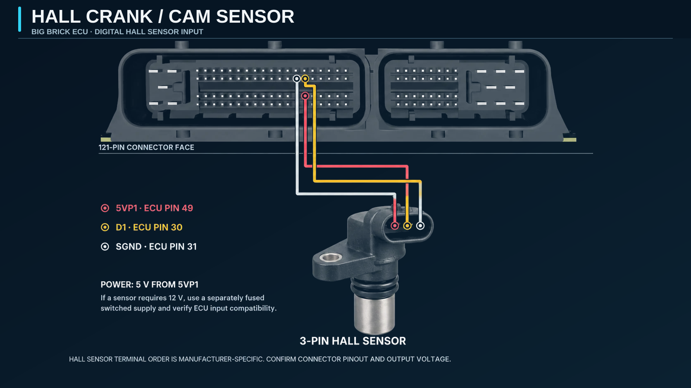
Typically needs power, sensor ground and a signal. D1 (pin 30) is an example; D2–D6 are also digital-input choices when available and configured appropriately. Verify whether your sensor uses 5 V or 12 V.
VR / differential sensor
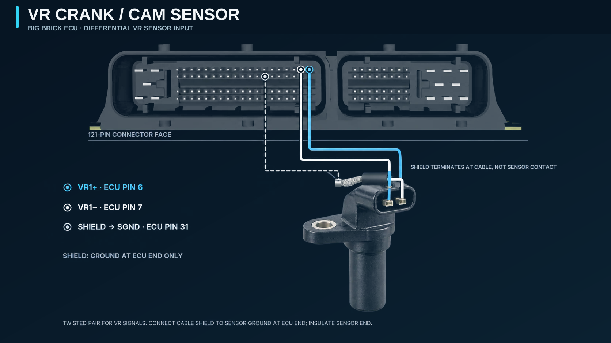
Two signal conductors to VR1+ and VR1− (pins 6 and 7); shield termination at the ECU end as illustrated.
Checkpoint: Check for a valid and stable RPM reading and trigger synchronization during a controlled no-fuel, no-spark test before moving on.
Wire the coil type you actually have.
Smart and dumb coils are not wired the same way. Select the correct output type and confirm coil/driver compatibility before connecting power.
Smart coils
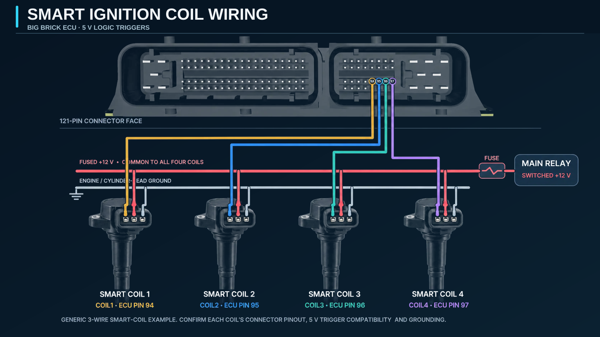
5 V logic trigger outputs (example COIL1–4: pins 94–97), fused switched power and the appropriate engine-head grounds.
Dumb coils / optional IGBT
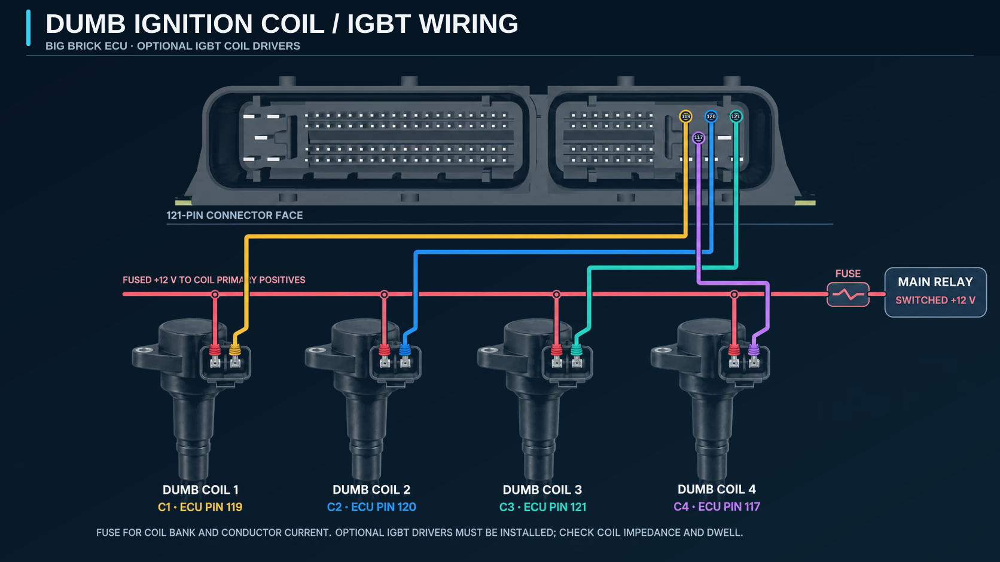
Primary low-side switching from optional C1–C4 outputs (pins 119, 120, 121 and 117), with fused main-relay power.
Checkpoint: Confirm firing order, configured dwell, output assignments and coil compatibility before enabling ignition.
Connect the injectors.
Each injector gets its own ECU low-side channel; the common positive feed comes from a suitably fused main-relay circuit. The illustration uses four sequential channels.

Checkpoint: Match output-to-cylinder order, injector electrical characteristics and the total branch current to the ECU, wiring and fuse ratings before allowing fuel delivery.
Fuel pump and cooling fan relays
Either low-side or high-side relay control works with the Big Brick. Choose whichever wiring style is easier for your installation or matches your existing harness, using an available output of the correct type.

Wiring note: The four panels show alternative connection styles, not four relays that must be installed together. The L1 / pin 113 and L2 / pin 112 assignments are examples; if those outputs are already used for injectors, select different available low-side channels. Likewise, select free high-side channels for the high-side method. Check relay terminal orientation and coil suppression polarity, and independently fuse each load appropriately.
VVT / oil-control solenoid

All Big Brick outputs support PWM, so PWM availability is not a reason to select one output over another. For a two-wire VVT solenoid, select a suitably rated low-side channel, provide the correct fused switched supply, and configure its function and frequency in the ECU.
Finish the sensors and widebands.
Complete the engine's required temperature, pressure and other analog inputs, then connect the wideband and knock sensors used by your installation.
MAP, fuel pressure and oil pressure
These compatible three-wire analog pressure sensors all follow the same principle: regulated 5 V, sensor ground, and a separate analog-voltage signal for each sensor. Example Big Brick inputs are AV1/pin 24 for MAP, AV2/pin 23 for fuel pressure and AV3/pin 22 for oil pressure, with 5VP1/pin 49 and SGND/pin 31 for the shared supply and return.

A different free compatible AV channel may be selected for each sensor. Their voltage-to-pressure calibration curves can differ even when all three use a 0–5 V-style analog input.
Coolant and intake-air temperature (CLT / IAT)
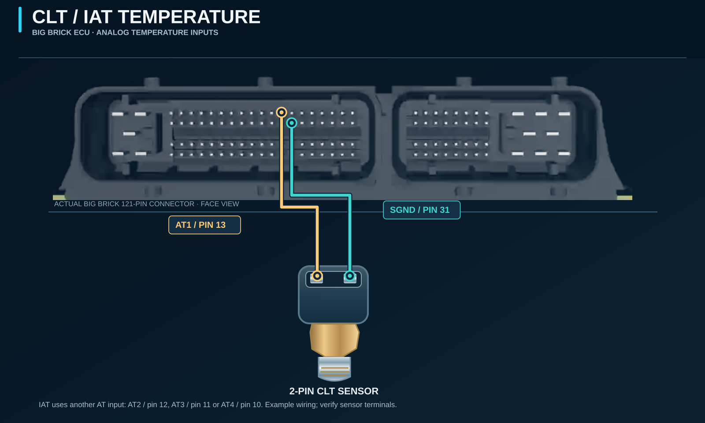
CLT and IAT follow the same two-wire principle, with separate AT channels and shared sensor-ground reference where appropriate. Configure each sensor's temperature calibration in TunerStudio.
Bosch LSU 4.9 wideband oxygen sensor — exact pinout
Important exception: This is a specific wiring reference, not a generic sensor example. The Bosch LSU 4.9 six-position connector pin numbering and sensor functions shown in the diagram are correct for the specified LSU 4.9 connector. Connect each of the six numbered sensor terminals to the designated Big Brick wideband connection exactly as shown. Do not substitute other ECU inputs or outputs, swap terminals, or interpret this diagram as an arbitrary connector illustration.

Bosch sensor connector pins: 1 = pump current (IP), 2 = virtual ground (VM), 3 = heater negative (H−), 4 = heater positive (H+), 5 = trim resistor (RT), 6 = Nernst voltage (UN). The original connector contains the sensor calibration resistor: do not remove, bypass, or rewire it. Each onboard wideband controller requires its own dedicated LSU 4.9 sensor wiring.
Knock sensor
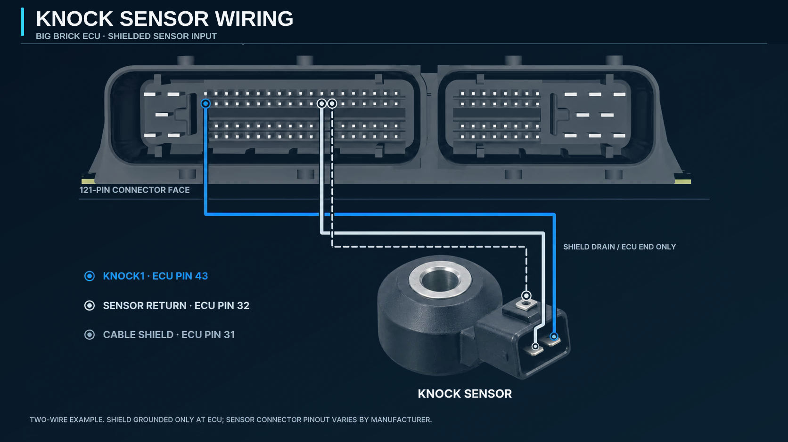
Use the correct signal, return and shielding arrangement for the selected knock sensor. KNOCK1 is pin 43 in the current pin map.
Checkpoint: Verify sensible sensor readings in the tuning software, including open/short fault behavior, before running the engine.
Connect CAN, flex fuel and boost control.
These three examples use actual component types and Big Brick channel names. Read the labels as functional wiring examples; always verify the physical terminal orientations and ECU board revision before building the harness.
CAN1 / CAN2 and OEM dashboard
CAN1 and CAN2 are independent differential pairs; each uses a matched CAN-H and CAN-L connection. The OEM dashboard is only on CAN1 in this example. The separate CAN2 pair does not connect to the dash. Confirm the actual dashboard bus compatibility and termination before wiring.
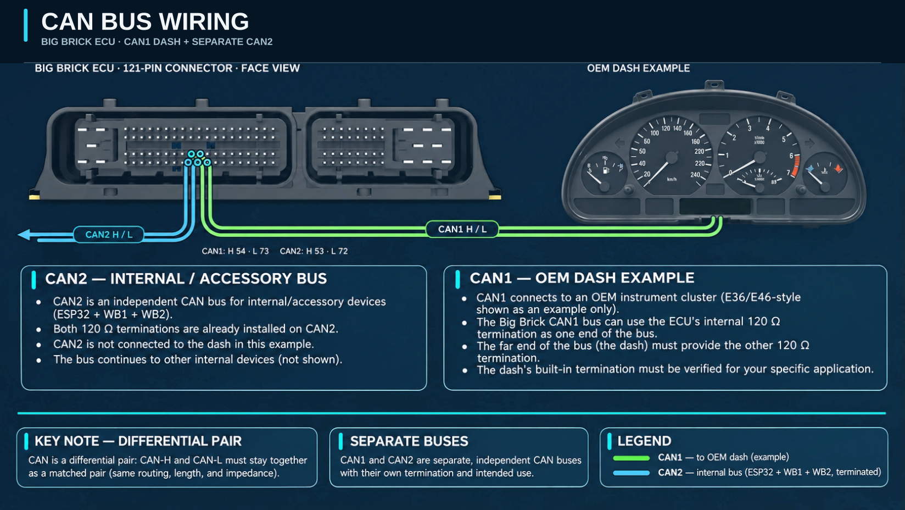
GM / Continental flex-fuel sensor
Use a separately fused, switched 12 V vehicle supply for the sensor, not an ECU 5 V sensor output. The sensor ground returns to an appropriate ground; the frequency signal goes to a compatible ECU digital input such as D1 (Big Brick pin 30). Confirm the sensor connector's terminal numbering and required signal pull-up/level conditioning before hookup.
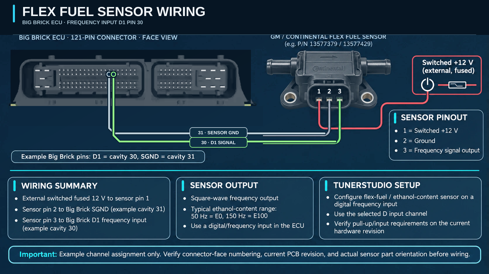
MAC three-port PWM boost solenoid
Connect one solenoid terminal to fused, switched vehicle 12 V and the other to a compatible low-side PWM output, illustrated here as L6 (pin 108). Verify the valve's port routing, coil ratings and safe control settings before enabling boost.

External electronic wastegate (DBW2)
This illustrated example shows DBW2+ (pin 45) and DBW2− (pin 44) as a bidirectional motor pair, with sensor 5 V (pin 49), position feedback to AV1 (pin 24), and sensor ground (pin 31). The actuator temperature and optional unfiltered outputs are not connected in this example. Direct motor compatibility has not been verified: confirm the actuator's actual electrical terminals, the Big Brick H-bridge current rating, supported control software and fail-safe operation before connecting or enabling the motor.
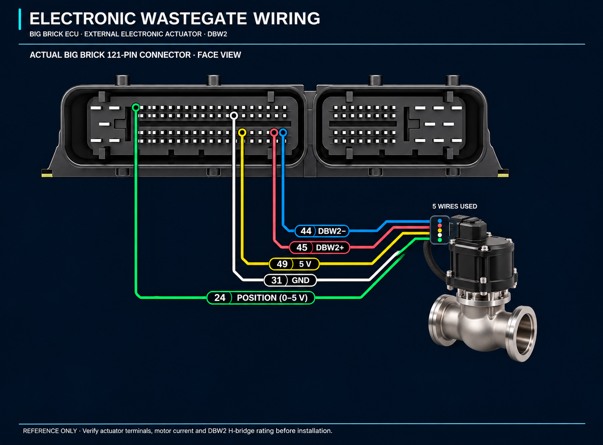
Connect buttons, clutch or brake switches.
Use the input type that matches the switch’s actual electrical behavior.
Buttons, clutch switches and brake switches
Two common input wiring methods are shown below. Use a momentary or maintained switch depending on the function in ECU software—for example launch control, a clutch switch, a brake switch or another user-enabled feature.
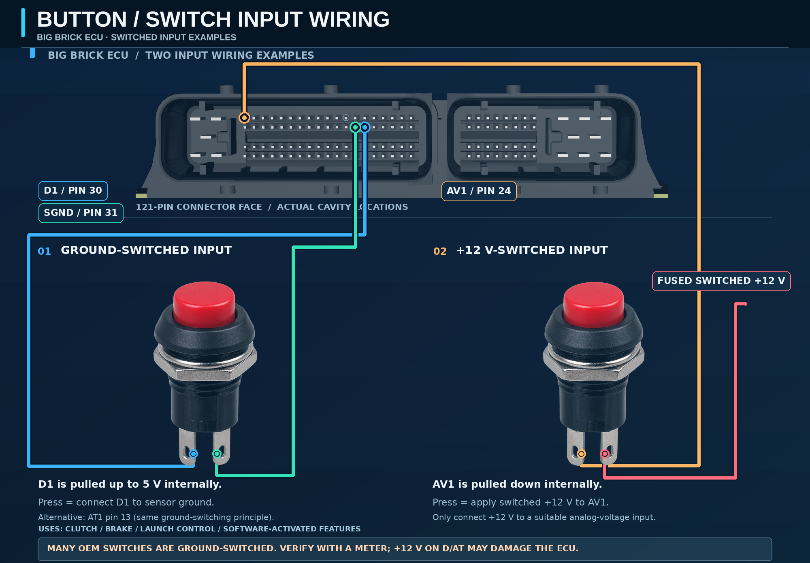
Before connecting an OEM clutch or brake switch: use a multimeter to determine whether it switches to ground or +12 V, then configure the corresponding input polarity and software function. Many OEM switches switch to ground, but wiring varies. Never apply 12 V to a digital or analog-temperature input—doing so may damage it. Only use a correctly rated analog-voltage input for the +12 V method.
Configure, verify, then commission.
Load the firmware and TunerStudio configuration appropriate for the installed Big Brick hardware, confirm all assigned inputs and outputs, and follow the engine-specific trigger and fueling requirements.
Independent TPS and pedal channels, crank/cam sync, sensors, ignition configuration and fuel controls.
Fuses, grounding, starter interlocks, actuator failsafes, and correct switched-power behavior.
After stopping, leave ECU wake power present long enough for pending tune data to save.
These are example layouts, not a substitute for the final hardware schematic or the specific engine's sensor and actuator datasheets. Confirm terminal orientation and all functions before connecting a live engine.